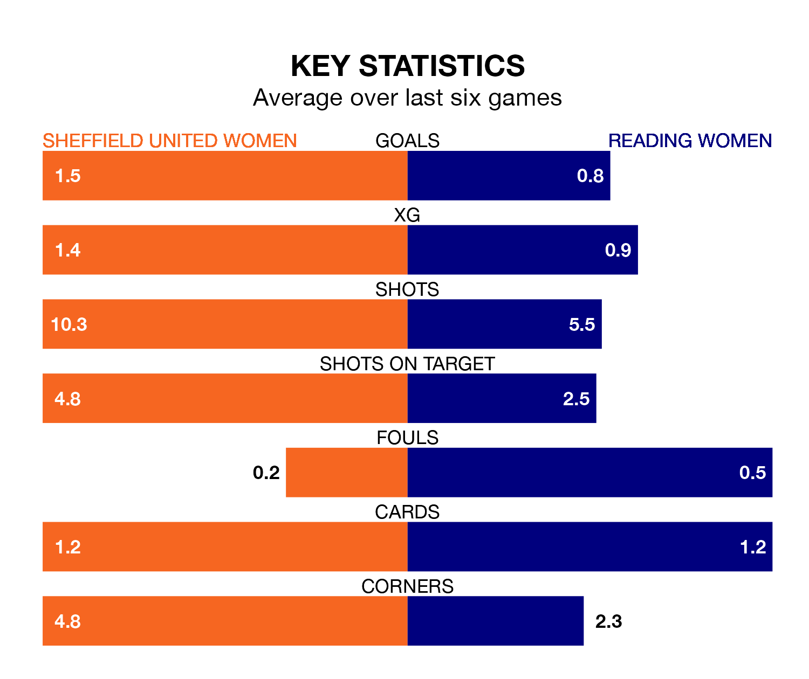

Reading Women travel to Sheffield United Women on early Sunday in the FA Women's Championship.
The visitors come into the game on the back of a defeat in their last match, having lost to Birmingham City Women 4-0 at home.
The Blades, meanwhile, won their last match, 2-0 against Crystal Palace Women, with their goals scored by Rachel Brown and Isobel Goodwin.
With 15 goals in 17 games so far this season, Reading are the league's joint-second-lowest scorers with 0.9 goals per game. And they are conceding more than average, letting in 28 goals at a rate of 1.6 per game.
Sheffield United, meanwhile, are average scorers, with 1.3 goals per game. They have conceded 1.4 goals per game.
In Goodwin, the Blades have one of the league's most on-form strikers so far this season. She has notched 12 goals in 17 appearances, to sit second in the scoring charts.
The Royals's top scorers, with two goals each, are Charlie Wellings, Freya Gregory, Tia Primmer and Lauren Wade.
The away team are 10th in the table after 17 games, of which they have won four and drawn six, earning 18 points.
The hosts are four places ahead of Reading in sixth, with seven wins and two draws putting them on 23 points.
Sheffield United are in mixed form in the FA Women's Championship, with three wins and three losses from their last six games.
With two wins and a draw over that period, Reading's form is slightly worse – they have taken seven points from 18, compared to Sheffield United's nine.
Updated: 10:19 (UTC), 22/03/24